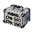
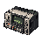
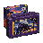
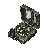
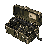
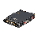
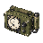

物品清单
js/data.js 生成，
和游戏里的数据完全一致；改完物品表重跑 node gen-item-sheet.js 就会更新。已配置图标 159 / 159，下方预览与游戏共用
assets/items/ 中的贴图。新增收集品图标总览 · 新增电子产品9件 · 新增医疗收集品10件 · 新增工业器材12件 · 新增文物藏品8件 · 新增军事物资15件 · 新增情报资料13件 · 新增神秘学物品15件。
收集品保留九类，物资单独分为弹药类与医疗物品。逐件分类与世界观依据。
医疗品18件图标已全部绘制，5件开放恢复HP，其余效果待开放。查看医疗图标总览。医疗系统说明 · 医疗产业提案（非正式历史）。
稀有度采用白、绿、蓝、紫、金、红六级。查看 140 件收集品的稀有度评级； 生活用品按"工业通用 / 多传统交汇 / 环礁湾独有"三层收敛为 29 件，说明见 生活器物。
贴图规格
尺寸 48 × 48 像素，PNG，透明背景。物品本体建议占满画布的 40×40，四周留 4px 空隙。
风格 像素画，关闭抗锯齿（游戏里用 image-rendering: pixelated 渲染）。深色背景下要看得清，尽量别用纯黑描边。
命名 文件名就是物品 id：antiq03.png、lux01.png。
位置 tide/assets/items/ 目录下。
游戏接入 搜刮、背包、安全箱和仓库共用这套图标。执行 node build.js 后，单文件游戏也会内嵌所有贴图。
稀有度色（用于边框 / 角标）
类别色（用于图鉴分册 / 容器提示）
收集品价值体系
单位：游戏货币 ¥。色条仅表示稀有度层次，不按金额线性缩放。医疗品与装备采用各自定价。逐件价格与经济说明
收集品140 件
按九类组织，用于探索、交易与图鉴收集。
生活用品life29 件
灾前社会的日常生活 · 三层结构：工业时代的通用器物打底，不同社会传统的交汇做层次，环礁湾自己的机构、商业与工艺史收口。不用于代表某一种现实文化。
电子产品elec15 件
近现代技术文明 · 以接近现实1990年代的技术为基础，包括随身听、收音机、录像机和通信器件；超自然研究设备也可能采用普通电子技术。


工业器材ind15 件
城市工业基础与工程活动 · 金属材料、工具、机械组件和工程仪器，体现城市工业史及人为干涉灾害的潜在技术背景。
医疗物资med12 件
医疗救治与生命研究 · 医疗耗材、病理切片和特殊检验用品，不预设它们一定来自异常研究。
文物藏品collect21 件
历史、文化与财富 · 古董、文物、艺术品、奢侈品和自然标本；价值可来自稀缺性、工艺、学术意义或历史背景。

军事物资mil15 件
封锁、疏散与军事行动 · 军用通信器材、制式工具、识别设备、武器零件与军用补给，可关联首次潮汐的撤离行动及后续封锁。




情报资料intel15 件
信息、调查与历史记录 · 官方档案、实验报告、地图、信函、秘密文件及其他记录载体；部分物品还可能具有探索信息价值。
神秘学物品occult15 件
隐藏于历史中的超自然传统 · 古代仪式用品、神秘学文物、祭器、符号器具和现代神秘学实践制作的物品；能否生效不决定分类。
异常遗物odd3 件
无法通过常规规律解释的事物 · 受潮汐或其他超自然现象影响的器物、特殊物质和不明产物；可以稳定存在、周期性变化或尚未被充分理解。
物资19 件
用于装填与治疗，不计入收集图鉴。
弹药类ammo1 件
武器弹药 · 用于武器装填的物资。当前为通用弹药，后续可按枪械与口径扩充分型。
医疗物品medical18 件
治疗与应急救护 · 恢复治疗、止痛、损伤处理、针剂和异常处理；仅恢复类已开放使用，与收集品中的医疗物资分开。